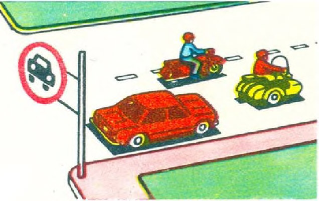
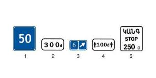
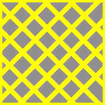
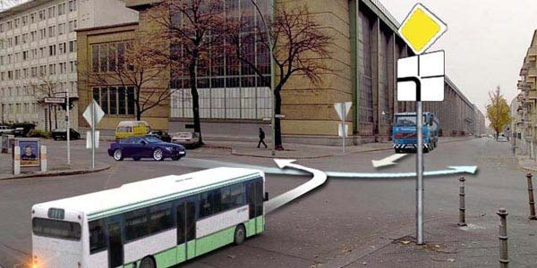
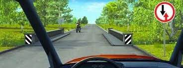
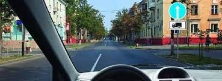
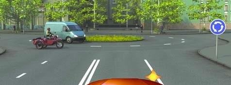
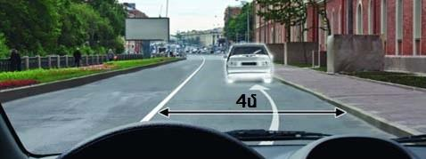
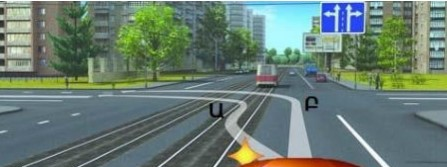

Թեստ 25
30:00
1. «Ճանապարհային երթևեկության անվտանգության ապահովման մասին» ՀՀ օրենքի համաձայն` երթևեկությունը սկսելուց առաջ տրանսպորտային միջոցի վարորդը պարտավոր է ստուգել`
2. «Ճանապարհային երթևեկության անվտանգության ապահովման մասին» ՀՀ օրենքի համաձայն` միջազգային վարորդական վկայականները տրվում են`
3. Տրանսպորտային միջոցների շահագործումն արգելվում է, եթե`
4. Տրանսպորտային միջոցների շահագործումն արգելվում է, եթե՝
5. Ո՞ր տրանսպորտային միջոցների վարորդներն են խախտել ճանապարհային նշանի պահանջները:

6. Հետևյալ նշաններից ո՞րն է ցույց տալիս նախազգուշացնող նշանների ազդեցության` ճանապարհի վտանգավոր հատվածի երկարությունը:

7. Ի՞նչ է ցույց տալիս այս ճանապարհային գծանշումը

8. Թեթև մարդատար ավտոմոբիլը խաչմերուկը կանցնի`

9. Թույլատրվո՞ւմ է անցնել կամուրջը, եթե դա չի խոչընդոտում մոտոցիկլի վարորդին

10. Ի՞նչ ուղղությամբ կարող եք շարունակել երթևեկությունը նշված խաչմերուկում, եթե վարում եք 3 տոննա թույլատրելի առավելագույն զանգվածով բեռնատար

11. Երկաթուղային գծանցներից ի՞նչ հեռավորության վրա է արգելվում տրանսպորտային միջոցների կայանումը բնակավայրերում:
12. Թույլատրվու՞մ է ավտոբուսների կայանումը բնակելի գոտիներում և բակային տարածքներում:
13. Ի՞նչ առավելագույն արագությամբ է թույլատրվում միջքաղաքային ավտոբուսների երթևեկությունն ավտոմայրուղիներով:
14. Այս խաչմերուկ մուտք գործելիս վարորդը

15. Շրջադարձը կատարելիս վարորդը պարտավոր է ճանապարհը զիջել
16. Թո՞ւյլատրվում է կանգառ կատարել նշված վայրում

17. Ի՞նչ մանևր է կատարում թեթև մարդատարի վարորդը

18. Կառուցապատված տարածքներում, որտեղ մուտք ու ելքը նշված են «Բնակելի գոտի» և «Բնակելի գոտու վերջ» նշաններով, չի արգելվում`
19. Ո՞ր հետագծով է թույլատրված ձախ շրջադարձը
